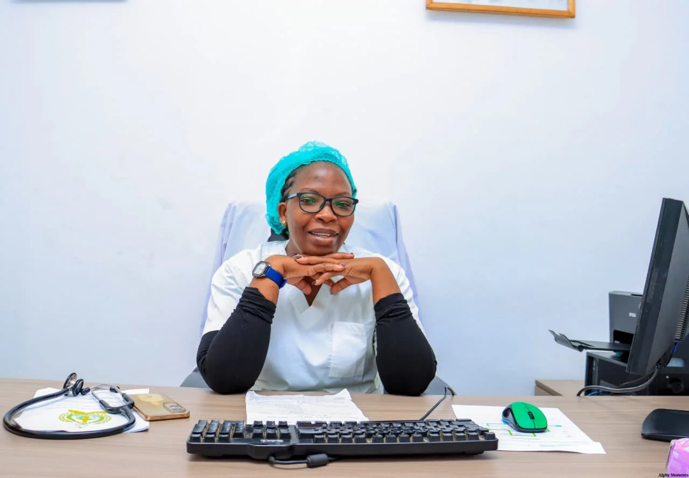

Medical team
People behind your care
The facility profile describes a multidisciplinary team spanning clinical care, nursing, administration and support. The photographs below are supplied by the centre.
 Gifted Minds Medical Centre team
Gifted Minds Medical Centre team

Clinical leadership
The centre operates under a Director and an appointed Hospital Management Board. Its staff profile includes physician consultants, medical officers, clinical officers and registered nurses, alongside administration and allied health roles.
We identify named team members here only where the supplied staff photographs identify them. Individual biographies and qualifications are not added unless verified by the facility.
Contact the centrePeople at Gifted Minds
Names and roles below follow the supplied photo filenames. No additional qualifications or biographies have been inferred.





A multidisciplinary team
Physician consultants
Medical officers
Clinical officers
Registered nurses
Pharmacist
Laboratory technologist
Physiotherapist
Nutritionist
Facility administrator
Accounts officer
Human Resource & Information Officer
Hospital Management System ICT officer